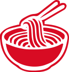
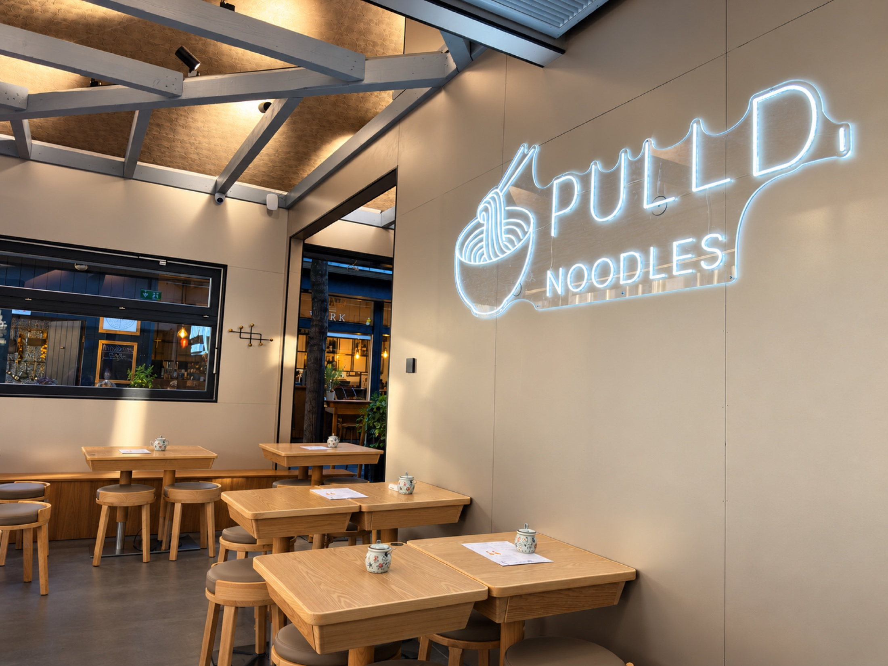
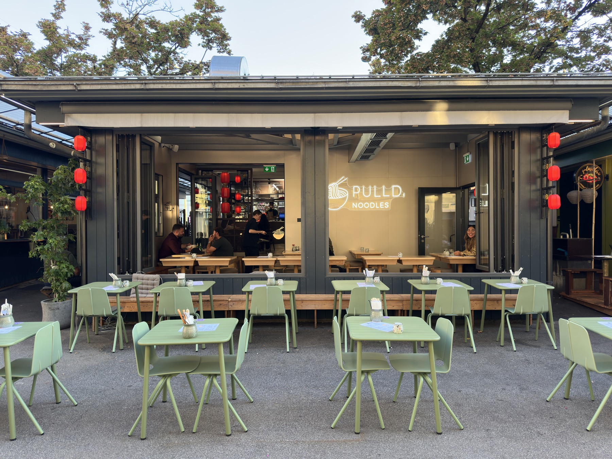

HANDGEMACHT. MITTEN IN GRAZ.
HAND
PULLD.
HEART FULL.
Gute Nudeln brauchen Hände.
Und richtig viel Herz.
01 / THIS IS PULLD.
WENIG SCHNICKSCHNACK.
VIEL GESCHMACK.
Von Hand gezogen, mit Stäbchen geliebt. Bei uns treffen Lanzhou-Nudeln und breite Biang auf hausgemachte Teigtaschen. Dazu rote Laternen, leuchtende Schilder und ein Platz für dich. Direkt am Jakominiplatz.

03 / COME FOR THE NOODLES
STAY FOR
THE VIBE.
Ein bisschen Neon. Ein bisschen Fernweh. Und mittendrin: du mit deiner Lieblingsbowl.
Schau unserer Küche bei der Arbeit zu, such dir deinen Platz unter den Laternen oder mach’s dir draußen gemütlich.
Komm vorbei

GOOD
MOODLES.
GREAT
NOODLES.
04 / SEE YOU AT PULLD.